I2SB: Image-to-Image Schrödinger Bridge
1 Georgia Tech
2 NVIDIA Corporation
3 Caltech

I2SB is a new class of conditional diffusion models that directly construct diffusion bridges between two given distributions. It yields interpretable generation, enjoys better sampling efficiency, and sets new records on many image restoration tasks.